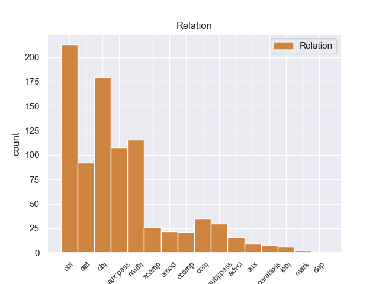
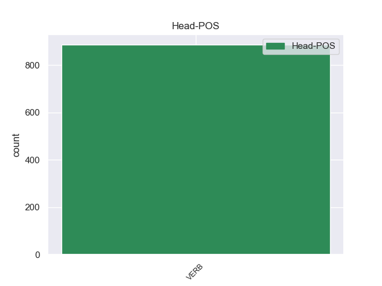
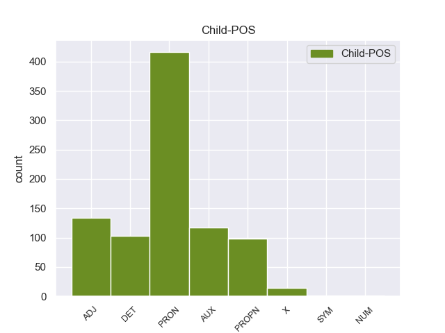

Distribution of features within this leaf



Agreement Rules sorted by frequency.
- When the dependent token is the object(obj) of the head token, and the head token is VERB and the dependent token is PRON.
1 Sus _ _ _ _ 0 _ _ _
2 actuales _ _ _ _ 0 _ _ _
3 8,5 _ _ _ _ 0 _ _ _
4 hectáreas _ _ _ _ 0 _ _ _
5 de _ _ _ _ 0 _ _ _
6 superficie _ _ _ _ 0 _ _ _
7 , _ _ _ _ 0 _ _ _
8 la _ _ _ _ 0 _ _ _
9 mitad _ _ _ _ 0 _ _ _
10 de _ _ _ _ 0 _ _ _
11 el _ _ _ _ 0 _ _ _
12 espacio _ _ _ _ 0 _ _ _
13 que _ _ _ _ 0 _ _ _
14 consagran _ _ _ _ 0 _ _ _
15 a _ _ _ _ 0 _ _ _
16 sus _ _ _ _ 0 _ _ _
17 torneos _ _ _ _ 0 _ _ _
18 el _ _ _ _ 0 _ _ _
19 Abierto _ _ _ _ 0 _ _ _
20 de _ _ _ _ 0 _ _ _
21 Australia _ _ _ _ 0 _ _ _
22 o _ _ _ _ 0 _ _ _
23 Wimbledon _ _ _ _ 0 _ _ _
24 , _ _ _ _ 0 _ _ _
25 lo él PRON _ Case=Acc|Gender=Masc|Number=Sing|Person=3|PrepCase=Npr|PronType=Prs 27 obj _ _
26 han _ _ _ _ 0 _ _ _
27 convertido convertir VERB _ Gender=Masc|Number=Sing|Tense=Past|VerbForm=Part 0 _ _ _
28 en _ _ _ _ 0 _ _ _
29 el _ _ _ _ 0 _ _ _
30 más _ _ _ _ 0 _ _ _
31 reducido _ _ _ _ 0 _ _ _
32 de _ _ _ _ 0 _ _ _
33 los _ _ _ _ 0 _ _ _
34 ' _ _ _ _ 0 _ _ _
35 Cuatro _ _ _ _ 0 _ _ _
36 Grandes _ _ _ _ 0 _ _ _
37 ' _ _ _ _ 0 _ _ _
38 . _ _ _ _ 0 _ _ _
1 De _ _ _ _ 0 _ _ _
2 todos todo PRON _ Gender=Masc|Number=Plur|PronType=Tot 4 obl _ _
3 es _ _ _ _ 0 _ _ _
4 sabido saber VERB _ Gender=Masc|Number=Sing|Tense=Past|VerbForm=Part 0 _ _ _
5 por _ _ _ _ 0 _ _ _
6 el _ _ _ _ 0 _ _ _
7 barrio _ _ _ _ 0 _ _ _
8 , _ _ _ _ 0 _ _ _
9 la _ _ _ _ 0 _ _ _
10 cara _ _ _ _ 0 _ _ _
11 , _ _ _ _ 0 _ _ _
12 jeta _ _ _ _ 0 _ _ _
13 y _ _ _ _ 0 _ _ _
14 demas _ _ _ _ 0 _ _ _
15 calificativos _ _ _ _ 0 _ _ _
16 posibles _ _ _ _ 0 _ _ _
17 sin _ _ _ _ 0 _ _ _
18 llegar _ _ _ _ 0 _ _ _
19 a _ _ _ _ 0 _ _ _
20 el _ _ _ _ 0 _ _ _
21 insulto _ _ _ _ 0 _ _ _
22 de _ _ _ _ 0 _ _ _
23 esta _ _ _ _ 0 _ _ _
24 gente _ _ _ _ 0 _ _ _
25 que _ _ _ _ 0 _ _ _
26 durante _ _ _ _ 0 _ _ _
27 años _ _ _ _ 0 _ _ _
28 se _ _ _ _ 0 _ _ _
29 ha _ _ _ _ 0 _ _ _
30 aprovechado _ _ _ _ 0 _ _ _
31 de _ _ _ _ 0 _ _ _
32 que _ _ _ _ 0 _ _ _
33 por _ _ _ _ 0 _ _ _
34 la _ _ _ _ 0 _ _ _
35 zona _ _ _ _ 0 _ _ _
36 no _ _ _ _ 0 _ _ _
37 abundan _ _ _ _ 0 _ _ _
38 los _ _ _ _ 0 _ _ _
39 negocios _ _ _ _ 0 _ _ _
40 de _ _ _ _ 0 _ _ _
41 electricidad _ _ _ _ 0 _ _ _
42 , _ _ _ _ 0 _ _ _
43 aprovechando _ _ _ _ 0 _ _ _
44 se _ _ _ _ 0 _ _ _
45 asimismo _ _ _ _ 0 _ _ _
46 de _ _ _ _ 0 _ _ _
47 la _ _ _ _ 0 _ _ _
48 gente _ _ _ _ 0 _ _ _
49 mayor _ _ _ _ 0 _ _ _
50 . _ _ _ _ 0 _ _ _
1 Los _ _ _ _ 0 _ _ _
2 viajeros _ _ _ _ 0 _ _ _
3 quedarán _ _ _ _ 0 _ _ _
4 atónitos _ _ _ _ 0 _ _ _
5 a _ _ _ _ 0 _ _ _
6 el el DET _ Definite=Def|Gender=Masc|Number=Sing|PronType=Art 7 det _ _
7 contemplar contemplar VERB _ Gender=Masc|Number=Sing|VerbForm=Fin 0 _ _ _
8 la _ _ _ _ 0 _ _ _
9 blanca _ _ _ _ 0 _ _ _
10 silueta _ _ _ _ 0 _ _ _
11 de _ _ _ _ 0 _ _ _
12 el _ _ _ _ 0 _ _ _
13 Hotel _ _ _ _ 0 _ _ _
14 Salto _ _ _ _ 0 _ _ _
15 Chico _ _ _ _ 0 _ _ _
16 recortar _ _ _ _ 0 _ _ _
17 se _ _ _ _ 0 _ _ _
18 sobre _ _ _ _ 0 _ _ _
19 el _ _ _ _ 0 _ _ _
20 poderoso _ _ _ _ 0 _ _ _
21 macizo _ _ _ _ 0 _ _ _
22 de _ _ _ _ 0 _ _ _
23 el _ _ _ _ 0 _ _ _
24 Paine _ _ _ _ 0 _ _ _
25 , _ _ _ _ 0 _ _ _
26 en _ _ _ _ 0 _ _ _
27 la _ _ _ _ 0 _ _ _
28 Patagonia _ _ _ _ 0 _ _ _
29 chilena _ _ _ _ 0 _ _ _
30 . _ _ _ _ 0 _ _ _
1 El _ _ _ _ 0 _ _ _
2 Ala _ _ _ _ 0 _ _ _
3 - _ _ _ _ 0 _ _ _
4 X _ _ _ _ 0 _ _ _
5 ha _ _ _ _ 0 _ _ _
6 sido ser AUX _ Gender=Masc|Number=Sing|Tense=Past|VerbForm=Part 7 aux:pass _ _
7 actualizado actualizar VERB _ Gender=Masc|Number=Sing|Tense=Past|VerbForm=Part 0 _ _ _
8 con _ _ _ _ 0 _ _ _
9 asiduidad _ _ _ _ 0 _ _ _
10 durante _ _ _ _ 0 _ _ _
11 su _ _ _ _ 0 _ _ _
12 periodo _ _ _ _ 0 _ _ _
13 de _ _ _ _ 0 _ _ _
14 diseño _ _ _ _ 0 _ _ _
15 . _ _ _ _ 0 _ _ _
1 Muchos _ _ _ _ 0 _ _ _
2 astrónomos _ _ _ _ 0 _ _ _
3 han _ _ _ _ 0 _ _ _
4 dudado _ _ _ _ 0 _ _ _
5 de _ _ _ _ 0 _ _ _
6 su _ _ _ _ 0 _ _ _
7 existencia _ _ _ _ 0 _ _ _
8 , _ _ _ _ 0 _ _ _
9 considerán _ _ _ _ 0 _ _ _
10 do _ _ _ _ 0 _ _ _
11 las _ _ _ _ 0 _ _ _
12 una _ _ _ _ 0 _ _ _
13 ilusión _ _ _ _ 0 _ _ _
14 óptica _ _ _ _ 0 _ _ _
15 , _ _ _ _ 0 _ _ _
16 mientras _ _ _ _ 0 _ _ _
17 otros otro PRON _ Gender=Masc|Number=Plur|PronType=Ind 20 nsubj _ _
18 las _ _ _ _ 0 _ _ _
19 han _ _ _ _ 0 _ _ _
20 tenido tener VERB _ Gender=Masc|Number=Sing|Tense=Past|VerbForm=Part 0 _ _ _
21 por _ _ _ _ 0 _ _ _
22 evidencias _ _ _ _ 0 _ _ _
23 de _ _ _ _ 0 _ _ _
24 tormentas _ _ _ _ 0 _ _ _
25 eléctricas _ _ _ _ 0 _ _ _
26 en _ _ _ _ 0 _ _ _
27 la _ _ _ _ 0 _ _ _
28 atmósfera _ _ _ _ 0 _ _ _
29 de _ _ _ _ 0 _ _ _
30 Venus _ _ _ _ 0 _ _ _
31 , _ _ _ _ 0 _ _ _
32 en _ _ _ _ 0 _ _ _
33 consonancia _ _ _ _ 0 _ _ _
34 con _ _ _ _ 0 _ _ _
35 los _ _ _ _ 0 _ _ _
36 datos _ _ _ _ 0 _ _ _
37 obtenidos _ _ _ _ 0 _ _ _
38 durante _ _ _ _ 0 _ _ _
39 la _ _ _ _ 0 _ _ _
40 década _ _ _ _ 0 _ _ _
41 de _ _ _ _ 0 _ _ _
42 1970 _ _ _ _ 0 _ _ _
43 por _ _ _ _ 0 _ _ _
44 las _ _ _ _ 0 _ _ _
45 sondas _ _ _ _ 0 _ _ _
46 soviéticas _ _ _ _ 0 _ _ _
47 y _ _ _ _ 0 _ _ _
48 estadounidenses _ _ _ _ 0 _ _ _
49 , _ _ _ _ 0 _ _ _
50 las _ _ _ _ 0 _ _ _
51 cuales _ _ _ _ 0 _ _ _
52 detectaron _ _ _ _ 0 _ _ _
53 emisiones _ _ _ _ 0 _ _ _
54 de _ _ _ _ 0 _ _ _
55 radio _ _ _ _ 0 _ _ _
56 de _ _ _ _ 0 _ _ _
57 baja _ _ _ _ 0 _ _ _
58 frecuencia _ _ _ _ 0 _ _ _
59 que _ _ _ _ 0 _ _ _
60 sugerían _ _ _ _ 0 _ _ _
61 que _ _ _ _ 0 _ _ _
62 en _ _ _ _ 0 _ _ _
63 la _ _ _ _ 0 _ _ _
64 densa _ _ _ _ 0 _ _ _
65 atmósfera _ _ _ _ 0 _ _ _
66 de _ _ _ _ 0 _ _ _
67 Venus _ _ _ _ 0 _ _ _
68 se _ _ _ _ 0 _ _ _
69 producían _ _ _ _ 0 _ _ _
70 fenómenos _ _ _ _ 0 _ _ _
71 eléctricos _ _ _ _ 0 _ _ _
72 . _ _ _ _ 0 _ _ _
1 Señor señor PROPN _ Gender=Masc|Number=Sing 7 nsubj _ _
2 Alto _ _ _ _ 0 _ _ _
3 representante _ _ _ _ 0 _ _ _
4 , _ _ _ _ 0 _ _ _
5 nos _ _ _ _ 0 _ _ _
6 ha _ _ _ _ 0 _ _ _
7 explicado explicar VERB _ Gender=Masc|Number=Sing|Tense=Past|VerbForm=Part 0 _ _ _
8 usted _ _ _ _ 0 _ _ _
9 los _ _ _ _ 0 _ _ _
10 progresos _ _ _ _ 0 _ _ _
11 registrados _ _ _ _ 0 _ _ _
12 hasta _ _ _ _ 0 _ _ _
13 hoy _ _ _ _ 0 _ _ _
14 en _ _ _ _ 0 _ _ _
15 relación _ _ _ _ 0 _ _ _
16 con _ _ _ _ 0 _ _ _
17 lo _ _ _ _ 0 _ _ _
18 acordado _ _ _ _ 0 _ _ _
19 en _ _ _ _ 0 _ _ _
20 Helsinki _ _ _ _ 0 _ _ _
21 . _ _ _ _ 0 _ _ _
1 El _ _ _ _ 0 _ _ _
2 Szent _ _ _ _ 0 _ _ _
3 István _ _ _ _ 0 _ _ _
4 es _ _ _ _ 0 _ _ _
5 uno _ _ _ _ 0 _ _ _
6 de _ _ _ _ 0 _ _ _
7 los _ _ _ _ 0 _ _ _
8 tres _ _ _ _ 0 _ _ _
9 únicos _ _ _ _ 0 _ _ _
10 acorazados _ _ _ _ 0 _ _ _
11 que _ _ _ _ 0 _ _ _
12 han _ _ _ _ 0 _ _ _
13 sido _ _ _ _ 0 _ _ _
14 filmados filmar VERB _ Gender=Masc|Number=Plur|Tense=Past|VerbForm=Part 0 _ _ _
15 en _ _ _ _ 0 _ _ _
16 el _ _ _ _ 0 _ _ _
17 momento _ _ _ _ 0 _ _ _
18 de _ _ _ _ 0 _ _ _
19 su _ _ _ _ 0 _ _ _
20 hundimiento _ _ _ _ 0 _ _ _
21 junto _ _ _ _ 0 _ _ _
22 a _ _ _ _ 0 _ _ _
23 el _ _ _ _ 0 _ _ _
24 HMS hms PROPN _ Gender=Masc|Number=Sing 14 obl _ _
25 Barham _ _ _ _ 0 _ _ _
26 y _ _ _ _ 0 _ _ _
27 a _ _ _ _ 0 _ _ _
28 el _ _ _ _ 0 _ _ _
29 USS _ _ _ _ 0 _ _ _
30 Arizona _ _ _ _ 0 _ _ _
31 . _ _ _ _ 0 _ _ _
1 Los él PRON _ Case=Acc|Gender=Masc|Number=Plur|Person=3|PrepCase=Npr|PronType=Prs 6 nsubj:pass _ _
2 que _ _ _ _ 0 _ _ _
3 la _ _ _ _ 0 _ _ _
4 reciben _ _ _ _ 0 _ _ _
5 son _ _ _ _ 0 _ _ _
6 destacados destacar VERB _ Gender=Masc|Number=Plur|Tense=Past|VerbForm=Part 0 _ _ _
7 por _ _ _ _ 0 _ _ _
8 un _ _ _ _ 0 _ _ _
9 « _ _ _ _ 0 _ _ _
10 descubrimiento _ _ _ _ 0 _ _ _
11 reciente _ _ _ _ 0 _ _ _
12 sumamente _ _ _ _ 0 _ _ _
13 importante _ _ _ _ 0 _ _ _
14 en _ _ _ _ 0 _ _ _
15 cualquier _ _ _ _ 0 _ _ _
16 rama _ _ _ _ 0 _ _ _
17 de _ _ _ _ 0 _ _ _
18 la _ _ _ _ 0 _ _ _
19 química _ _ _ _ 0 _ _ _
20 » _ _ _ _ 0 _ _ _
21 . _ _ _ _ 0 _ _ _
1 En _ _ _ _ 0 _ _ _
2 la _ _ _ _ 0 _ _ _
3 versión _ _ _ _ 0 _ _ _
4 de _ _ _ _ 0 _ _ _
5 los _ _ _ _ 0 _ _ _
6 LXX _ _ _ _ 0 _ _ _
7 encabeza _ _ _ _ 0 _ _ _
8 también _ _ _ _ 0 _ _ _
9 la _ _ _ _ 0 _ _ _
10 sección _ _ _ _ 0 _ _ _
11 de _ _ _ _ 0 _ _ _
12 libros _ _ _ _ 0 _ _ _
13 llamados llamado VERB _ Gender=Masc|Number=Plur|VerbForm=Part 0 _ _ _
14 didácticos didáctico ADJ _ Gender=Masc|Number=Plur 13 xcomp _ SpaceAfter=No
15 . _ _ _ _ 0 _ _ _
1 De _ _ _ _ 0 _ _ _
2 los _ _ _ _ 0 _ _ _
3 19 _ _ _ _ 0 _ _ _
4 habitantes _ _ _ _ 0 _ _ _
5 , _ _ _ _ 0 _ _ _
6 Crocker _ _ _ _ 0 _ _ _
7 estaba _ _ _ _ 0 _ _ _
8 compuesto compuesto VERB _ Gender=Masc|Number=Sing|VerbForm=Part 0 _ _ _
9 por _ _ _ _ 0 _ _ _
10 el _ _ _ _ 0 _ _ _
11 100 _ _ _ _ 0 _ _ _
12 % _ _ _ _ 0 _ _ _
13 blancos _ _ _ _ 0 _ _ _
14 , _ _ _ _ 0 _ _ _
15 el _ _ _ _ 0 _ _ _
16 0 _ _ _ _ 0 _ _ _
17 % _ _ _ _ 0 _ _ _
18 eran _ _ _ _ 0 _ _ _
19 afroamericanos _ _ _ _ 0 _ _ _
20 , _ _ _ _ 0 _ _ _
21 el _ _ _ _ 0 _ _ _
22 0 _ _ _ _ 0 _ _ _
23 % _ _ _ _ 0 _ _ _
24 eran _ _ _ _ 0 _ _ _
25 amerindios _ _ _ _ 0 _ _ _
26 , _ _ _ _ 0 _ _ _
27 el _ _ _ _ 0 _ _ _
28 0 _ _ _ _ 0 _ _ _
29 % _ _ _ _ 0 _ _ _
30 eran _ _ _ _ 0 _ _ _
31 asiáticos _ _ _ _ 0 _ _ _
32 , _ _ _ _ 0 _ _ _
33 el _ _ _ _ 0 _ _ _
34 0 _ _ _ _ 0 _ _ _
35 % _ _ _ _ 0 _ _ _
36 eran _ _ _ _ 0 _ _ _
37 isleños isleño ADJ _ Gender=Masc|Number=Plur 8 conj _ _
38 de _ _ _ _ 0 _ _ _
39 el _ _ _ _ 0 _ _ _
40 Pacífico _ _ _ _ 0 _ _ _
41 , _ _ _ _ 0 _ _ _
42 el _ _ _ _ 0 _ _ _
43 0 _ _ _ _ 0 _ _ _
44 % _ _ _ _ 0 _ _ _
45 eran _ _ _ _ 0 _ _ _
46 de _ _ _ _ 0 _ _ _
47 otras _ _ _ _ 0 _ _ _
48 razas _ _ _ _ 0 _ _ _
49 y _ _ _ _ 0 _ _ _
50 el _ _ _ _ 0 _ _ _
51 0 _ _ _ _ 0 _ _ _
52 % _ _ _ _ 0 _ _ _
53 pertenecían _ _ _ _ 0 _ _ _
54 a _ _ _ _ 0 _ _ _
55 dos _ _ _ _ 0 _ _ _
56 o _ _ _ _ 0 _ _ _
57 más _ _ _ _ 0 _ _ _
58 razas _ _ _ _ 0 _ _ _
59 . _ _ _ _ 0 _ _ _
1 Ofiuco _ _ _ _ 0 _ _ _
2 o _ _ _ _ 0 _ _ _
3 Ophiuchus _ _ _ _ 0 _ _ _
4 ( _ _ _ _ 0 _ _ _
5 el _ _ _ _ 0 _ _ _
6 portador _ _ _ _ 0 _ _ _
7 de _ _ _ _ 0 _ _ _
8 la _ _ _ _ 0 _ _ _
9 serpiente _ _ _ _ 0 _ _ _
10 ) _ _ _ _ 0 _ _ _
11 , _ _ _ _ 0 _ _ _
12 que _ _ _ _ 0 _ _ _
13 es _ _ _ _ 0 _ _ _
14 una _ _ _ _ 0 _ _ _
15 de _ _ _ _ 0 _ _ _
16 las _ _ _ _ 0 _ _ _
17 constelaciones _ _ _ _ 0 _ _ _
18 descritas _ _ _ _ 0 _ _ _
19 por _ _ _ _ 0 _ _ _
20 Ptolomeo _ _ _ _ 0 _ _ _
21 entre _ _ _ _ 0 _ _ _
22 sus _ _ _ _ 0 _ _ _
23 48 _ _ _ _ 0 _ _ _
24 constelaciones _ _ _ _ 0 _ _ _
25 escrituradas _ _ _ _ 0 _ _ _
26 , _ _ _ _ 0 _ _ _
27 está _ _ _ _ 0 _ _ _
28 considerado considerado VERB _ Gender=Masc|Number=Sing|VerbForm=Part 0 _ _ _
29 como _ _ _ _ 0 _ _ _
30 el _ _ _ _ 0 _ _ _
31 decimotercero decimotercero ADJ _ Gender=Masc|Number=Sing|NumType=Ord 28 obl _ _
32 de _ _ _ _ 0 _ _ _
33 los _ _ _ _ 0 _ _ _
34 signos _ _ _ _ 0 _ _ _
35 zodiacales _ _ _ _ 0 _ _ _
36 que _ _ _ _ 0 _ _ _
37 junto _ _ _ _ 0 _ _ _
38 con _ _ _ _ 0 _ _ _
39 el _ _ _ _ 0 _ _ _
40 de _ _ _ _ 0 _ _ _
41 la _ _ _ _ 0 _ _ _
42 ballena _ _ _ _ 0 _ _ _
43 optan _ _ _ _ 0 _ _ _
44 por _ _ _ _ 0 _ _ _
45 incorporar _ _ _ _ 0 _ _ _
46 se _ _ _ _ 0 _ _ _
47 a _ _ _ _ 0 _ _ _
48 los _ _ _ _ 0 _ _ _
49 signos _ _ _ _ 0 _ _ _
50 actuales _ _ _ _ 0 _ _ _
51 . _ _ _ _ 0 _ _ _
1 Pujaló _ _ _ _ 0 _ _ _
2 negó _ _ _ _ 0 _ _ _
3 que _ _ _ _ 0 _ _ _
4 la _ _ _ _ 0 _ _ _
5 niña _ _ _ _ 0 _ _ _
6 fuese _ _ _ _ 0 _ _ _
7 suya _ _ _ _ 0 _ _ _
8 , _ _ _ _ 0 _ _ _
9 que _ _ _ _ 0 _ _ _
10 nunca _ _ _ _ 0 _ _ _
11 la _ _ _ _ 0 _ _ _
12 había _ _ _ _ 0 _ _ _
13 visto _ _ _ _ 0 _ _ _
14 y _ _ _ _ 0 _ _ _
15 que _ _ _ _ 0 _ _ _
16 Enriqueta _ _ _ _ 0 _ _ _
17 ya _ _ _ _ 0 _ _ _
18 le _ _ _ _ 0 _ _ _
19 había _ _ _ _ 0 _ _ _
20 mentido mentir VERB _ Gender=Masc|Number=Sing|Tense=Past|VerbForm=Part 0 _ _ _
21 en _ _ _ _ 0 _ _ _
22 el _ _ _ _ 0 _ _ _
23 pasado pasado ADJ _ Gender=Masc|Number=Sing 20 amod _ _
24 con _ _ _ _ 0 _ _ _
25 un _ _ _ _ 0 _ _ _
26 falso _ _ _ _ 0 _ _ _
27 embarazo _ _ _ _ 0 _ _ _
28 y _ _ _ _ 0 _ _ _
29 un _ _ _ _ 0 _ _ _
30 falso _ _ _ _ 0 _ _ _
31 parto _ _ _ _ 0 _ _ _
32 . _ _ _ _ 0 _ _ _
1 Señor _ _ _ _ 0 _ _ _
2 Presidente _ _ _ _ 0 _ _ _
3 , _ _ _ _ 0 _ _ _
4 puesto puesto VERB _ Gender=Masc|Number=Sing|VerbForm=Fin 0 _ _ _
5 que _ _ _ _ 0 _ _ _
6 hemos _ _ _ _ 0 _ _ _
7 sido _ _ _ _ 0 _ _ _
8 aludidos aludido ADJ _ Gender=Masc|Number=Plur|VerbForm=Part 4 ccomp _ SpaceAfter=No
9 , _ _ _ _ 0 _ _ _
10 me _ _ _ _ 0 _ _ _
11 permitiré _ _ _ _ 0 _ _ _
12 responder _ _ _ _ 0 _ _ _
13 le _ _ _ _ 0 _ _ _
14 a _ _ _ _ 0 _ _ _
15 el _ _ _ _ 0 _ _ _
16 Sr. _ _ _ _ 0 _ _ _
17 Liese _ _ _ _ 0 _ _ _
18 . _ _ _ _ 0 _ _ _
1 Además _ _ _ _ 0 _ _ _
2 , _ _ _ _ 0 _ _ _
3 quiero _ _ _ _ 0 _ _ _
4 agradecer _ _ _ _ 0 _ _ _
5 a _ _ _ _ 0 _ _ _
6 la _ _ _ _ 0 _ _ _
7 Comisión _ _ _ _ 0 _ _ _
8 Europea _ _ _ _ 0 _ _ _
9 la _ _ _ _ 0 _ _ _
10 información _ _ _ _ 0 _ _ _
11 y _ _ _ _ 0 _ _ _
12 el _ _ _ _ 0 _ _ _
13 asesoramiento _ _ _ _ 0 _ _ _
14 técnico _ _ _ _ 0 _ _ _
15 que _ _ _ _ 0 _ _ _
16 nos _ _ _ _ 0 _ _ _
17 ha _ _ _ _ 0 _ _ _
18 facilitado facilitar VERB _ Gender=Masc|Number=Sing|Tense=Past|VerbForm=Part 0 _ _ _
19 , _ _ _ _ 0 _ _ _
20 ya _ _ _ _ 0 _ _ _
21 que _ _ _ _ 0 _ _ _
22 han _ _ _ _ 0 _ _ _
23 supuesto supuesto ADJ _ Gender=Masc|Number=Sing|VerbForm=Part 18 advcl _ _
24 una _ _ _ _ 0 _ _ _
25 gran _ _ _ _ 0 _ _ _
26 ayuda _ _ _ _ 0 _ _ _
27 . _ _ _ _ 0 _ _ _
1 162 _ _ _ _ 0 _ _ _
2 hoyos _ _ _ _ 0 _ _ _
3 fueron _ _ _ _ 0 _ _ _
4 excavados excavado VERB _ Gender=Masc|Number=Plur|Tense=Past|VerbForm=Part 0 _ _ _
5 , _ _ _ _ 0 _ _ _
6 algunos alguno PRON _ Gender=Masc|Number=Plur|PronType=Ind 4 conj _ _
7 con _ _ _ _ 0 _ _ _
8 postes _ _ _ _ 0 _ _ _
9 dobles _ _ _ _ 0 _ _ _
10 y _ _ _ _ 0 _ _ _
11 restos _ _ _ _ 0 _ _ _
12 de _ _ _ _ 0 _ _ _
13 postes _ _ _ _ 0 _ _ _
14 todavía _ _ _ _ 0 _ _ _
15 visibles _ _ _ _ 0 _ _ _
16 . _ _ _ _ 0 _ _ _
1 Cantando _ _ _ _ 0 _ _ _
2 en _ _ _ _ 0 _ _ _
3 español _ _ _ _ 0 _ _ _
4 , _ _ _ _ 0 _ _ _
5 Joan _ _ _ _ 0 _ _ _
6 Báez _ _ _ _ 0 _ _ _
7 grabó _ _ _ _ 0 _ _ _
8 dos _ _ _ _ 0 _ _ _
9 versiones _ _ _ _ 0 _ _ _
10 de _ _ _ _ 0 _ _ _
11 " _ _ _ _ 0 _ _ _
12 Gracias _ _ _ _ 0 _ _ _
13 a _ _ _ _ 0 _ _ _
14 la _ _ _ _ 0 _ _ _
15 vida _ _ _ _ 0 _ _ _
16 " _ _ _ _ 0 _ _ _
17 de _ _ _ _ 0 _ _ _
18 la _ _ _ _ 0 _ _ _
19 chilena _ _ _ _ 0 _ _ _
20 Violeta _ _ _ _ 0 _ _ _
21 Parra _ _ _ _ 0 _ _ _
22 , _ _ _ _ 0 _ _ _
23 una _ _ _ _ 0 _ _ _
24 como _ _ _ _ 0 _ _ _
25 solista _ _ _ _ 0 _ _ _
26 en _ _ _ _ 0 _ _ _
27 1974 _ _ _ _ 0 _ _ _
28 en _ _ _ _ 0 _ _ _
29 su _ _ _ _ 0 _ _ _
30 disco _ _ _ _ 0 _ _ _
31 " _ _ _ _ 0 _ _ _
32 Gracias _ _ _ _ 0 _ _ _
33 a _ _ _ _ 0 _ _ _
34 la _ _ _ _ 0 _ _ _
35 vida _ _ _ _ 0 _ _ _
36 · _ _ _ _ 0 _ _ _
37 y _ _ _ _ 0 _ _ _
38 otra _ _ _ _ 0 _ _ _
39 con _ _ _ _ 0 _ _ _
40 la _ _ _ _ 0 _ _ _
41 cantante _ _ _ _ 0 _ _ _
42 folklórica _ _ _ _ 0 _ _ _
43 argentina _ _ _ _ 0 _ _ _
44 Mercedes _ _ _ _ 0 _ _ _
45 Sosa _ _ _ _ 0 _ _ _
46 , _ _ _ _ 0 _ _ _
47 con _ _ _ _ 0 _ _ _
48 la _ _ _ _ 0 _ _ _
49 que _ _ _ _ 0 _ _ _
50 realizó _ _ _ _ 0 _ _ _
51 muchas _ _ _ _ 0 _ _ _
52 giras _ _ _ _ 0 _ _ _
53 por _ _ _ _ 0 _ _ _
54 Europa _ _ _ _ 0 _ _ _
55 y _ _ _ _ 0 _ _ _
56 a _ _ _ _ 0 _ _ _
57 la _ _ _ _ 0 _ _ _
58 que _ _ _ _ 0 _ _ _
59 la él PRON _ Case=Acc|Gender=Fem|Number=Sing|Person=3|PrepCase=Npr|PronType=Prs 60 iobj _ _
60 unía unía VERB _ Gender=Fem|Number=Sing|VerbForm=Fin 0 _ _ _
61 una _ _ _ _ 0 _ _ _
62 gran _ _ _ _ 0 _ _ _
63 amistad _ _ _ _ 0 _ _ _
64 . _ _ _ _ 0 _ _ _
1 Me _ _ _ _ 0 _ _ _
2 refiero _ _ _ _ 0 _ _ _
3 a _ _ _ _ 0 _ _ _
4 la _ _ _ _ 0 _ _ _
5 Conferencia _ _ _ _ 0 _ _ _
6 de _ _ _ _ 0 _ _ _
7 Roma _ _ _ _ 0 _ _ _
8 y _ _ _ _ 0 _ _ _
9 a _ _ _ _ 0 _ _ _
10 que _ _ _ _ 0 _ _ _
11 14 _ _ _ _ 0 _ _ _
12 de _ _ _ _ 0 _ _ _
13 15 _ _ _ _ 0 _ _ _
14 Estados _ _ _ _ 0 _ _ _
15 de _ _ _ _ 0 _ _ _
16 la _ _ _ _ 0 _ _ _
17 Unión _ _ _ _ 0 _ _ _
18 aún _ _ _ _ 0 _ _ _
19 no _ _ _ _ 0 _ _ _
20 han _ _ _ _ 0 _ _ _
21 ratificado ratificar VERB _ Gender=Masc|Number=Sing|Tense=Past|VerbForm=Part 0 _ _ _
22 el _ _ _ _ 0 _ _ _
23 Tratado tratado PROPN _ Gender=Masc|Number=Sing 21 obj _ _
24 relativo _ _ _ _ 0 _ _ _
25 a _ _ _ _ 0 _ _ _
26 el _ _ _ _ 0 _ _ _
27 Tribunal _ _ _ _ 0 _ _ _
28 Penal _ _ _ _ 0 _ _ _
29 Internacional _ _ _ _ 0 _ _ _
30 . _ _ _ _ 0 _ _ _
1 " _ _ _ _ 0 _ _ _
2 Señor _ _ _ _ 0 _ _ _
3 Presidente _ _ _ _ 0 _ _ _
4 , _ _ _ _ 0 _ _ _
5 ha _ _ _ _ 0 _ _ _
6 quedado _ _ _ _ 0 _ _ _
7 claro _ _ _ _ 0 _ _ _
8 por _ _ _ _ 0 _ _ _
9 lo él PRON _ Case=Acc|Gender=Masc|Number=Sing|Person=3|PrepCase=Npr|PronType=Prs 10 det _ _
10 dicho dicho VERB _ Gender=Masc|Number=Sing|VerbForm=Part 0 _ _ _
11 por _ _ _ _ 0 _ _ _
12 el _ _ _ _ 0 _ _ _
13 Comisario _ _ _ _ 0 _ _ _
14 que _ _ _ _ 0 _ _ _
15 la _ _ _ _ 0 _ _ _
16 Comisión _ _ _ _ 0 _ _ _
17 es _ _ _ _ 0 _ _ _
18 muy _ _ _ _ 0 _ _ _
19 concienzuda _ _ _ _ 0 _ _ _
20 a _ _ _ _ 0 _ _ _
21 la _ _ _ _ 0 _ _ _
22 hora _ _ _ _ 0 _ _ _
23 de _ _ _ _ 0 _ _ _
24 medir _ _ _ _ 0 _ _ _
25 la _ _ _ _ 0 _ _ _
26 adicionalidad _ _ _ _ 0 _ _ _
27 de _ _ _ _ 0 _ _ _
28 la _ _ _ _ 0 _ _ _
29 financiación _ _ _ _ 0 _ _ _
30 estructural _ _ _ _ 0 _ _ _
31 en _ _ _ _ 0 _ _ _
32 el _ _ _ _ 0 _ _ _
33 nivel _ _ _ _ 0 _ _ _
34 de _ _ _ _ 0 _ _ _
35 los _ _ _ _ 0 _ _ _
36 Estados _ _ _ _ 0 _ _ _
37 miembros _ _ _ _ 0 _ _ _
38 , _ _ _ _ 0 _ _ _
39 y _ _ _ _ 0 _ _ _
40 también _ _ _ _ 0 _ _ _
41 ha _ _ _ _ 0 _ _ _
42 sido _ _ _ _ 0 _ _ _
43 satisfactorio _ _ _ _ 0 _ _ _
44 escuchar _ _ _ _ 0 _ _ _
45 sus _ _ _ _ 0 _ _ _
46 garantías _ _ _ _ 0 _ _ _
47 acerca _ _ _ _ 0 _ _ _
48 de _ _ _ _ 0 _ _ _
49 los _ _ _ _ 0 _ _ _
50 diferentes _ _ _ _ 0 _ _ _
51 niveles _ _ _ _ 0 _ _ _
52 de _ _ _ _ 0 _ _ _
53 evaluación _ _ _ _ 0 _ _ _
54 que _ _ _ _ 0 _ _ _
55 existen _ _ _ _ 0 _ _ _
56 . _ _ _ _ 0 _ _ _
1 No _ _ _ _ 0 _ _ _
2 estoy estar AUX _ Gender=Fem|Number=Sing|VerbForm=Fin 3 aux _ _
3 dispuesta dispuesto VERB _ Gender=Fem|Number=Sing|Tense=Past|VerbForm=Part 0 _ _ _
4 a _ _ _ _ 0 _ _ _
5 admitir _ _ _ _ 0 _ _ _
6 una _ _ _ _ 0 _ _ _
7 suspensión _ _ _ _ 0 _ _ _
8 si _ _ _ _ 0 _ _ _
9 no _ _ _ _ 0 _ _ _
10 se _ _ _ _ 0 _ _ _
11 cumplen _ _ _ _ 0 _ _ _
12 los _ _ _ _ 0 _ _ _
13 requisitos _ _ _ _ 0 _ _ _
14 que _ _ _ _ 0 _ _ _
15 acabo _ _ _ _ 0 _ _ _
16 de _ _ _ _ 0 _ _ _
17 exponer _ _ _ _ 0 _ _ _
18 le _ _ _ _ 0 _ _ _
19 . _ _ _ _ 0 _ _ _
1 De _ _ _ _ 0 _ _ _
2 los _ _ _ _ 0 _ _ _
3 1500 _ _ _ _ 0 _ _ _
4 habitantes _ _ _ _ 0 _ _ _
5 , _ _ _ _ 0 _ _ _
6 el _ _ _ _ 0 _ _ _
7 municipio _ _ _ _ 0 _ _ _
8 de _ _ _ _ 0 _ _ _
9 Lincoln _ _ _ _ 0 _ _ _
10 estaba _ _ _ _ 0 _ _ _
11 compuesto compuesto VERB _ Gender=Masc|Number=Sing|VerbForm=Part 0 _ _ _
12 por _ _ _ _ 0 _ _ _
13 el _ _ _ _ 0 _ _ _
14 97.6 _ _ _ _ 0 _ _ _
15 % _ _ _ _ 0 _ _ _
16 blancos _ _ _ _ 0 _ _ _
17 , _ _ _ _ 0 _ _ _
18 el _ _ _ _ 0 _ _ _
19 0.53 _ _ _ _ 0 _ _ _
20 % _ _ _ _ 0 _ _ _
21 eran _ _ _ _ 0 _ _ _
22 afroamericanos afroamericano ADJ _ Gender=Masc|Number=Plur 11 parataxis _ SpaceAfter=No
23 , _ _ _ _ 0 _ _ _
24 el _ _ _ _ 0 _ _ _
25 0.33 _ _ _ _ 0 _ _ _
26 % _ _ _ _ 0 _ _ _
27 eran _ _ _ _ 0 _ _ _
28 amerindios _ _ _ _ 0 _ _ _
29 , _ _ _ _ 0 _ _ _
30 el _ _ _ _ 0 _ _ _
31 0.27 _ _ _ _ 0 _ _ _
32 % _ _ _ _ 0 _ _ _
33 eran _ _ _ _ 0 _ _ _
34 asiáticos _ _ _ _ 0 _ _ _
35 , _ _ _ _ 0 _ _ _
36 el _ _ _ _ 0 _ _ _
37 0 _ _ _ _ 0 _ _ _
38 % _ _ _ _ 0 _ _ _
39 eran _ _ _ _ 0 _ _ _
40 isleños _ _ _ _ 0 _ _ _
41 de _ _ _ _ 0 _ _ _
42 el _ _ _ _ 0 _ _ _
43 Pacífico _ _ _ _ 0 _ _ _
44 , _ _ _ _ 0 _ _ _
45 el _ _ _ _ 0 _ _ _
46 0.07 _ _ _ _ 0 _ _ _
47 % _ _ _ _ 0 _ _ _
48 eran _ _ _ _ 0 _ _ _
49 de _ _ _ _ 0 _ _ _
50 otras _ _ _ _ 0 _ _ _
51 razas _ _ _ _ 0 _ _ _
52 y _ _ _ _ 0 _ _ _
53 el _ _ _ _ 0 _ _ _
54 1.2 _ _ _ _ 0 _ _ _
55 % _ _ _ _ 0 _ _ _
56 pertenecían _ _ _ _ 0 _ _ _
57 a _ _ _ _ 0 _ _ _
58 dos _ _ _ _ 0 _ _ _
59 o _ _ _ _ 0 _ _ _
60 más _ _ _ _ 0 _ _ _
61 razas _ _ _ _ 0 _ _ _
62 . _ _ _ _ 0 _ _ _
1 Ese _ _ _ _ 0 _ _ _
2 verano _ _ _ _ 0 _ _ _
3 , _ _ _ _ 0 _ _ _
4 Cristiano cristiano PROPN _ Gender=Masc|Number=Sing 7 nsubj:pass _ _
5 Ronaldo _ _ _ _ 0 _ _ _
6 fue _ _ _ _ 0 _ _ _
7 vendido vender VERB _ Gender=Masc|Number=Sing|Tense=Past|VerbForm=Part 0 _ _ _
8 a _ _ _ _ 0 _ _ _
9 el _ _ _ _ 0 _ _ _
10 Real _ _ _ _ 0 _ _ _
11 Madrid _ _ _ _ 0 _ _ _
12 por _ _ _ _ 0 _ _ _
13 una _ _ _ _ 0 _ _ _
14 cifra _ _ _ _ 0 _ _ _
15 récord _ _ _ _ 0 _ _ _
16 de _ _ _ _ 0 _ _ _
17 80 _ _ _ _ 0 _ _ _
18 millones _ _ _ _ 0 _ _ _
19 GBP _ _ _ _ 0 _ _ _
20 . _ _ _ _ 0 _ _ _
1 Todos todo DET _ Gender=Masc|Number=Plur|PronType=Tot 3 nsubj _ _
2 hemos _ _ _ _ 0 _ _ _
3 señalado señalar VERB _ Gender=Masc|Number=Sing|Tense=Past|VerbForm=Part 0 _ _ _
4 que _ _ _ _ 0 _ _ _
5 la _ _ _ _ 0 _ _ _
6 fase _ _ _ _ 0 _ _ _
7 de _ _ _ _ 0 _ _ _
8 adaptación _ _ _ _ 0 _ _ _
9 provoca _ _ _ _ 0 _ _ _
10 inseguridades _ _ _ _ 0 _ _ _
11 y _ _ _ _ 0 _ _ _
12 peligros _ _ _ _ 0 _ _ _
13 . _ _ _ _ 0 _ _ _
1 La _ _ _ _ 0 _ _ _
2 impactante _ _ _ _ 0 _ _ _
3 noticia _ _ _ _ 0 _ _ _
4 de _ _ _ _ 0 _ _ _
5 la _ _ _ _ 0 _ _ _
6 derrota _ _ _ _ 0 _ _ _
7 italiana _ _ _ _ 0 _ _ _
8 no _ _ _ _ 0 _ _ _
9 pasó _ _ _ _ 0 _ _ _
10 desapercibida _ _ _ _ 0 _ _ _
11 y _ _ _ _ 0 _ _ _
12 pronto _ _ _ _ 0 _ _ _
13 tropas tropa ADJ _ Gender=Fem|Number=Plur 33 nsubj:pass _ _
14 alemanas _ _ _ _ 0 _ _ _
15 , _ _ _ _ 0 _ _ _
16 el _ _ _ _ 0 _ _ _
17 Deutsches _ _ _ _ 0 _ _ _
18 Afrikakorps _ _ _ _ 0 _ _ _
19 a _ _ _ _ 0 _ _ _
20 el _ _ _ _ 0 _ _ _
21 mando _ _ _ _ 0 _ _ _
22 de _ _ _ _ 0 _ _ _
23 Rommel _ _ _ _ 0 _ _ _
24 ( _ _ _ _ 0 _ _ _
25 El _ _ _ _ 0 _ _ _
26 Zorro _ _ _ _ 0 _ _ _
27 de _ _ _ _ 0 _ _ _
28 el _ _ _ _ 0 _ _ _
29 Desierto _ _ _ _ 0 _ _ _
30 ) _ _ _ _ 0 _ _ _
31 , _ _ _ _ 0 _ _ _
32 fueron _ _ _ _ 0 _ _ _
33 enviadas enviado VERB _ Gender=Fem|Number=Plur|Tense=Past|VerbForm=Part 0 _ _ _
34 en _ _ _ _ 0 _ _ _
35 ayuda _ _ _ _ 0 _ _ _
36 . _ _ _ _ 0 _ _ _
1 En _ _ _ _ 0 _ _ _
2 ese _ _ _ _ 0 _ _ _
3 sentido _ _ _ _ 0 _ _ _
4 , _ _ _ _ 0 _ _ _
5 espero _ _ _ _ 0 _ _ _
6 que _ _ _ _ 0 _ _ _
7 podamos _ _ _ _ 0 _ _ _
8 tratar _ _ _ _ 0 _ _ _
9 de _ _ _ _ 0 _ _ _
10 estas _ _ _ _ 0 _ _ _
11 cuestiones _ _ _ _ 0 _ _ _
12 en _ _ _ _ 0 _ _ _
13 el _ _ _ _ 0 _ _ _
14 próximo _ _ _ _ 0 _ _ _
15 Consejo _ _ _ _ 0 _ _ _
16 de _ _ _ _ 0 _ _ _
17 Transportes _ _ _ _ 0 _ _ _
18 a _ _ _ _ 0 _ _ _
19 finales _ _ _ _ 0 _ _ _
20 de _ _ _ _ 0 _ _ _
21 este _ _ _ _ 0 _ _ _
22 mes _ _ _ _ 0 _ _ _
23 , _ _ _ _ 0 _ _ _
24 lo _ _ _ _ 0 _ _ _
25 mismo _ _ _ _ 0 _ _ _
26 que _ _ _ _ 0 _ _ _
27 , _ _ _ _ 0 _ _ _
28 como _ _ _ _ 0 _ _ _
29 ha _ _ _ _ 0 _ _ _
30 dicho _ _ _ _ 0 _ _ _
31 el _ _ _ _ 0 _ _ _
32 Sr. _ _ _ _ 0 _ _ _
33 Watts _ _ _ _ 0 _ _ _
34 , _ _ _ _ 0 _ _ _
35 todo todo DET _ Gender=Masc|Number=Sing|PronType=Tot 37 obj _ _
36 lo _ _ _ _ 0 _ _ _
37 relativo relativo VERB _ Gender=Masc|Number=Sing|VerbForm=Fin 0 _ _ _
38 a _ _ _ _ 0 _ _ _
39 la _ _ _ _ 0 _ _ _
40 seguridad _ _ _ _ 0 _ _ _
41 vial _ _ _ _ 0 _ _ _
42 en _ _ _ _ 0 _ _ _
43 general _ _ _ _ 0 _ _ _
44 porque _ _ _ _ 0 _ _ _
45 la _ _ _ _ 0 _ _ _
46 Presidencia _ _ _ _ 0 _ _ _
47 portuguesa _ _ _ _ 0 _ _ _
48 lo _ _ _ _ 0 _ _ _
49 plantea _ _ _ _ 0 _ _ _
50 como _ _ _ _ 0 _ _ _
51 una _ _ _ _ 0 _ _ _
52 de _ _ _ _ 0 _ _ _
53 las _ _ _ _ 0 _ _ _
54 cuestiones _ _ _ _ 0 _ _ _
55 claves _ _ _ _ 0 _ _ _
56 en _ _ _ _ 0 _ _ _
57 su _ _ _ _ 0 _ _ _
58 Presidencia _ _ _ _ 0 _ _ _
59 . _ _ _ _ 0 _ _ _
1 El _ _ _ _ 0 _ _ _
2 Sr. _ _ _ _ 0 _ _ _
3 van _ _ _ _ 0 _ _ _
4 den _ _ _ _ 0 _ _ _
5 Bos _ _ _ _ 0 _ _ _
6 , _ _ _ _ 0 _ _ _
7 entre _ _ _ _ 0 _ _ _
8 otros otro DET _ Gender=Masc|Number=Plur|PronType=Ind 12 advcl _ SpaceAfter=No
9 , _ _ _ _ 0 _ _ _
10 se _ _ _ _ 0 _ _ _
11 ha _ _ _ _ 0 _ _ _
12 referido referir VERB _ Gender=Masc|Number=Sing|Tense=Past|VerbForm=Part 0 _ _ _
13 a _ _ _ _ 0 _ _ _
14 la _ _ _ _ 0 _ _ _
15 condonación _ _ _ _ 0 _ _ _
16 de _ _ _ _ 0 _ _ _
17 la _ _ _ _ 0 _ _ _
18 deuda _ _ _ _ 0 _ _ _
19 , _ _ _ _ 0 _ _ _
20 un _ _ _ _ 0 _ _ _
21 problema _ _ _ _ 0 _ _ _
22 que _ _ _ _ 0 _ _ _
23 ciertamente _ _ _ _ 0 _ _ _
24 merece _ _ _ _ 0 _ _ _
25 mucha _ _ _ _ 0 _ _ _
26 atención _ _ _ _ 0 _ _ _
27 . _ _ _ _ 0 _ _ _
1 Pero _ _ _ _ 0 _ _ _
2 han _ _ _ _ 0 _ _ _
3 ido _ _ _ _ 0 _ _ _
4 demasiado _ _ _ _ 0 _ _ _
5 lejos _ _ _ _ 0 _ _ _
6 , _ _ _ _ 0 _ _ _
7 no _ _ _ _ 0 _ _ _
8 han _ _ _ _ 0 _ _ _
9 tenido _ _ _ _ 0 _ _ _
10 consideración _ _ _ _ 0 _ _ _
11 por _ _ _ _ 0 _ _ _
12 nada _ _ _ _ 0 _ _ _
13 , _ _ _ _ 0 _ _ _
14 no _ _ _ _ 0 _ _ _
15 han _ _ _ _ 0 _ _ _
16 tenido tener VERB _ Gender=Masc|Number=Sing|Tense=Past|VerbForm=Part 0 _ _ _
17 consideración consideración NUM _ Gender=Masc|Number=Sing|NumType=Card 16 obj _ _
18 por _ _ _ _ 0 _ _ _
19 Etiopía _ _ _ _ 0 _ _ _
20 y _ _ _ _ 0 _ _ _
21 han _ _ _ _ 0 _ _ _
22 saboteado _ _ _ _ 0 _ _ _
23 las _ _ _ _ 0 _ _ _
24 votaciones _ _ _ _ 0 _ _ _
25 . _ _ _ _ 0 _ _ _
1 El _ _ _ _ 0 _ _ _
2 tercer _ _ _ _ 0 _ _ _
3 ámbito _ _ _ _ 0 _ _ _
4 en _ _ _ _ 0 _ _ _
5 el _ _ _ _ 0 _ _ _
6 que _ _ _ _ 0 _ _ _
7 deseo _ _ _ _ 0 _ _ _
8 centrar _ _ _ _ 0 _ _ _
9 me _ _ _ _ 0 _ _ _
10 -y _ _ _ _ 0 _ _ _
11 a _ _ _ _ 0 _ _ _
12 el _ _ _ _ 0 _ _ _
13 que _ _ _ _ 0 _ _ _
14 se _ _ _ _ 0 _ _ _
15 han _ _ _ _ 0 _ _ _
16 referido referir VERB _ Gender=Masc|Number=Sing|Tense=Past|VerbForm=Part 0 _ _ _
17 otros _ _ _ _ 0 _ _ _
18 oradores- _ _ _ _ 0 _ _ _
19 es _ _ _ _ 0 _ _ _
20 el el DET _ Definite=Def|Gender=Masc|Number=Sing|PronType=Art 16 parataxis _ _
21 de _ _ _ _ 0 _ _ _
22 los _ _ _ _ 0 _ _ _
23 médicos _ _ _ _ 0 _ _ _
24 en _ _ _ _ 0 _ _ _
25 formación _ _ _ _ 0 _ _ _
26 . _ _ _ _ 0 _ _ _
1 Todos _ _ _ _ 0 _ _ _
2 sabemos _ _ _ _ 0 _ _ _
3 que _ _ _ _ 0 _ _ _
4 un _ _ _ _ 0 _ _ _
5 planteamiento _ _ _ _ 0 _ _ _
6 totalmente _ _ _ _ 0 _ _ _
7 federal _ _ _ _ 0 _ _ _
8 y _ _ _ _ 0 _ _ _
9 una _ _ _ _ 0 _ _ _
10 situación _ _ _ _ 0 _ _ _
11 en _ _ _ _ 0 _ _ _
12 la _ _ _ _ 0 _ _ _
13 que _ _ _ _ 0 _ _ _
14 una _ _ _ _ 0 _ _ _
15 autoridad _ _ _ _ 0 _ _ _
16 judicial _ _ _ _ 0 _ _ _
17 europea _ _ _ _ 0 _ _ _
18 tenga _ _ _ _ 0 _ _ _
19 prelación _ _ _ _ 0 _ _ _
20 sobre _ _ _ _ 0 _ _ _
21 las _ _ _ _ 0 _ _ _
22 autoridades _ _ _ _ 0 _ _ _
23 judiciales _ _ _ _ 0 _ _ _
24 nacionales _ _ _ _ 0 _ _ _
25 es _ _ _ _ 0 _ _ _
26 un _ _ _ _ 0 _ _ _
27 paso _ _ _ _ 0 _ _ _
28 demasiado _ _ _ _ 0 _ _ _
29 avanzado avanzado VERB _ Gender=Masc|Number=Sing|VerbForm=Part 0 _ _ _
30 para _ _ _ _ 0 _ _ _
31 algunos alguno DET _ Gender=Masc|Number=Plur|PronType=Ind 29 obl _ SpaceAfter=No
32 . _ _ _ _ 0 _ _ _
1 Me _ _ _ _ 0 _ _ _
2 pregunto _ _ _ _ 0 _ _ _
3 si _ _ _ _ 0 _ _ _
4 no _ _ _ _ 0 _ _ _
5 sería _ _ _ _ 0 _ _ _
6 un _ _ _ _ 0 _ _ _
7 mayor _ _ _ _ 0 _ _ _
8 paso _ _ _ _ 0 _ _ _
9 adelante _ _ _ _ 0 _ _ _
10 , _ _ _ _ 0 _ _ _
11 tanto _ _ _ _ 0 _ _ _
12 por _ _ _ _ 0 _ _ _
13 lo _ _ _ _ 0 _ _ _
14 que _ _ _ _ 0 _ _ _
15 se _ _ _ _ 0 _ _ _
16 refiere _ _ _ _ 0 _ _ _
17 a _ _ _ _ 0 _ _ _
18 ganar _ _ _ _ 0 _ _ _
19 se _ _ _ _ 0 _ _ _
20 la _ _ _ _ 0 _ _ _
21 confianza _ _ _ _ 0 _ _ _
22 de _ _ _ _ 0 _ _ _
23 los _ _ _ _ 0 _ _ _
24 países _ _ _ _ 0 _ _ _
25 en _ _ _ _ 0 _ _ _
26 desarrollo _ _ _ _ 0 _ _ _
27 como _ _ _ _ 0 _ _ _
28 a _ _ _ _ 0 _ _ _
29 dar _ _ _ _ 0 _ _ _
30 ejemplo _ _ _ _ 0 _ _ _
31 a _ _ _ _ 0 _ _ _
32 otros _ _ _ _ 0 _ _ _
33 asociados _ _ _ _ 0 _ _ _
34 comerciales _ _ _ _ 0 _ _ _
35 , _ _ _ _ 0 _ _ _
36 si _ _ _ _ 0 _ _ _
37 nosotros _ _ _ _ 0 _ _ _
38 , _ _ _ _ 0 _ _ _
39 como _ _ _ _ 0 _ _ _
40 Unión _ _ _ _ 0 _ _ _
41 Europea _ _ _ _ 0 _ _ _
42 , _ _ _ _ 0 _ _ _
43 dijéramos _ _ _ _ 0 _ _ _
44 : _ _ _ _ 0 _ _ _
45 " _ _ _ _ 0 _ _ _
46 Ha _ _ _ _ 0 _ _ _
47 llegado llegar VERB _ Gender=Masc|Number=Sing|Tense=Past|VerbForm=Part 0 _ _ _
48 el _ _ _ _ 0 _ _ _
49 momento _ _ _ _ 0 _ _ _
50 : _ _ _ _ 0 _ _ _
51 esto _ _ _ _ 0 _ _ _
52 es _ _ _ _ 0 _ _ _
53 lo él PRON _ Case=Acc|Gender=Masc|Number=Sing|Person=3|PrepCase=Npr|PronType=Prs 47 parataxis _ _
54 que _ _ _ _ 0 _ _ _
55 vamos _ _ _ _ 0 _ _ _
56 a _ _ _ _ 0 _ _ _
57 ofreceros _ _ _ _ 0 _ _ _
58 ahora _ _ _ _ 0 _ _ _
59 . _ _ _ _ 0 _ _ _
1 Por _ _ _ _ 0 _ _ _
2 eso _ _ _ _ 0 _ _ _
3 es _ _ _ _ 0 _ _ _
4 tan _ _ _ _ 0 _ _ _
5 importante _ _ _ _ 0 _ _ _
6 que _ _ _ _ 0 _ _ _
7 el _ _ _ _ 0 _ _ _
8 Parlamento _ _ _ _ 0 _ _ _
9 Europeo _ _ _ _ 0 _ _ _
10 se _ _ _ _ 0 _ _ _
11 pronuncie _ _ _ _ 0 _ _ _
12 en _ _ _ _ 0 _ _ _
13 favor _ _ _ _ 0 _ _ _
14 de _ _ _ _ 0 _ _ _
15 los _ _ _ _ 0 _ _ _
16 objetivos _ _ _ _ 0 _ _ _
17 OSPAR OSPAR VERB _ Gender=Masc|Number=Sing|VerbForm=Fin 0 _ _ _
18 de _ _ _ _ 0 _ _ _
19 nivel _ _ _ _ 0 _ _ _
20 próximo _ _ _ _ 0 _ _ _
21 a _ _ _ _ 0 _ _ _
22 cero cero NUM _ Gender=Masc|Number=Sing|NumType=Card 17 obl _ _
23 en _ _ _ _ 0 _ _ _
24 el _ _ _ _ 0 _ _ _
25 año _ _ _ _ 0 _ _ _
26 2020 _ _ _ _ 0 _ _ _
27 . _ _ _ _ 0 _ _ _
1 El _ _ _ _ 0 _ _ _
2 Sr. _ _ _ _ 0 _ _ _
3 Kreissl-Dörfler _ _ _ _ 0 _ _ _
4 , _ _ _ _ 0 _ _ _
5 por _ _ _ _ 0 _ _ _
6 ejemplo _ _ _ _ 0 _ _ _
7 , _ _ _ _ 0 _ _ _
8 ha _ _ _ _ 0 _ _ _
9 hecho hacer VERB _ Gender=Masc|Number=Sing|Tense=Past|VerbForm=Part 0 _ _ _
10 referencia _ _ _ _ 0 _ _ _
11 , _ _ _ _ 0 _ _ _
12 en _ _ _ _ 0 _ _ _
13 inglés _ _ _ _ 0 _ _ _
14 , _ _ _ _ 0 _ _ _
15 a _ _ _ _ 0 _ _ _
16 la _ _ _ _ 0 _ _ _
17 financiación _ _ _ _ 0 _ _ _
18 a _ _ _ _ 0 _ _ _
19 largo _ _ _ _ 0 _ _ _
20 plazo _ _ _ _ 0 _ _ _
21 para _ _ _ _ 0 _ _ _
22 proyectos _ _ _ _ 0 _ _ _
23 a _ _ _ _ 0 _ _ _
24 largo _ _ _ _ 0 _ _ _
25 plazo _ _ _ _ 0 _ _ _
26 , _ _ _ _ 0 _ _ _
27 long long X _ Gender=Masc|Number=Sing 9 conj _ _
28 term _ _ _ _ 0 _ _ _
29 financing _ _ _ _ 0 _ _ _
30 for _ _ _ _ 0 _ _ _
31 long _ _ _ _ 0 _ _ _
32 term _ _ _ _ 0 _ _ _
33 projects _ _ _ _ 0 _ _ _
34 , _ _ _ _ 0 _ _ _
35 lo _ _ _ _ 0 _ _ _
36 cual _ _ _ _ 0 _ _ _
37 es _ _ _ _ 0 _ _ _
38 una _ _ _ _ 0 _ _ _
39 cuestión _ _ _ _ 0 _ _ _
40 evidente _ _ _ _ 0 _ _ _
41 . _ _ _ _ 0 _ _ _
1 Estas este DET _ Gender=Fem|Number=Plur|PronType=Dem 4 nsubj:pass _ _
2 han _ _ _ _ 0 _ _ _
3 sido _ _ _ _ 0 _ _ _
4 establecidas establecido VERB _ Gender=Fem|Number=Plur|Tense=Past|VerbForm=Part 0 _ _ _
5 por _ _ _ _ 0 _ _ _
6 la _ _ _ _ 0 _ _ _
7 Organización _ _ _ _ 0 _ _ _
8 de _ _ _ _ 0 _ _ _
9 la _ _ _ _ 0 _ _ _
10 Aviación _ _ _ _ 0 _ _ _
11 Civil _ _ _ _ 0 _ _ _
12 Internacional _ _ _ _ 0 _ _ _
13 por _ _ _ _ 0 _ _ _
14 última _ _ _ _ 0 _ _ _
15 vez _ _ _ _ 0 _ _ _
16 en _ _ _ _ 0 _ _ _
17 1977 _ _ _ _ 0 _ _ _
18 . _ _ _ _ 0 _ _ _
1 Por _ _ _ _ 0 _ _ _
2 tanto _ _ _ _ 0 _ _ _
3 , _ _ _ _ 0 _ _ _
4 desea deseo VERB _ Gender=Fem|Number=Sing|VerbForm=Fin 0 _ _ _
5 usted usted X _ Gender=Fem|Number=Sing 4 obj _ SpaceAfter=No
6 , _ _ _ _ 0 _ _ _
7 si _ _ _ _ 0 _ _ _
8 he _ _ _ _ 0 _ _ _
9 comprendido _ _ _ _ 0 _ _ _
10 bien _ _ _ _ 0 _ _ _
11 -me _ _ _ _ 0 _ _ _
12 dirijo _ _ _ _ 0 _ _ _
13 también _ _ _ _ 0 _ _ _
14 a _ _ _ _ 0 _ _ _
15 los _ _ _ _ 0 _ _ _
16 ponentes- _ _ _ _ 0 _ _ _
17 que _ _ _ _ 0 _ _ _
18 votemos _ _ _ _ 0 _ _ _
19 el _ _ _ _ 0 _ _ _
20 párrafo _ _ _ _ 0 _ _ _
21 29 _ _ _ _ 0 _ _ _
22 con _ _ _ _ 0 _ _ _
23 la _ _ _ _ 0 _ _ _
24 presentación _ _ _ _ 0 _ _ _
25 de _ _ _ _ 0 _ _ _
26 una _ _ _ _ 0 _ _ _
27 enmienda _ _ _ _ 0 _ _ _
28 oral _ _ _ _ 0 _ _ _
29 . _ _ _ _ 0 _ _ _
1 A _ _ _ _ 0 _ _ _
2 estas _ _ _ _ 0 _ _ _
3 alturas _ _ _ _ 0 _ _ _
4 de _ _ _ _ 0 _ _ _
5 la _ _ _ _ 0 _ _ _
6 película _ _ _ _ 0 _ _ _
7 probablemente _ _ _ _ 0 _ _ _
8 ya _ _ _ _ 0 _ _ _
9 hayas _ _ _ _ 0 _ _ _
10 conseguido conseguir VERB _ Gender=Masc|Number=Sing|VerbForm=Part 0 _ _ _
11 convertir _ _ _ _ 0 _ _ _
12 a _ _ _ _ 0 _ _ _
13 tu _ _ _ _ 0 _ _ _
14 flamante _ _ _ _ 0 _ _ _
15 Windows _ _ _ _ 0 _ _ _
16 Phone _ _ _ _ 0 _ _ _
17 7 _ _ _ _ 0 _ _ _
18 en _ _ _ _ 0 _ _ _
19 un _ _ _ _ 0 _ _ _
20 pendrive pendrive X _ Gender=Masc|Number=Sing 10 obl _ _
21 XXL _ _ _ _ 0 _ _ _
22 para _ _ _ _ 0 _ _ _
23 dar _ _ _ _ 0 _ _ _
24 cabida _ _ _ _ 0 _ _ _
25 a _ _ _ _ 0 _ _ _
26 todo _ _ _ _ 0 _ _ _
27 cuanto _ _ _ _ 0 _ _ _
28 se _ _ _ _ 0 _ _ _
29 te _ _ _ _ 0 _ _ _
30 antoje _ _ _ _ 0 _ _ _
31 , _ _ _ _ 0 _ _ _
32 así _ _ _ _ 0 _ _ _
33 que _ _ _ _ 0 _ _ _
34 ¿ _ _ _ _ 0 _ _ _
35 por _ _ _ _ 0 _ _ _
36 qué _ _ _ _ 0 _ _ _
37 no _ _ _ _ 0 _ _ _
38 ampliar _ _ _ _ 0 _ _ _
39 también _ _ _ _ 0 _ _ _
40 la _ _ _ _ 0 _ _ _
41 hazaña _ _ _ _ 0 _ _ _
42 a _ _ _ _ 0 _ _ _
43 las _ _ _ _ 0 _ _ _
44 aplicaciones _ _ _ _ 0 _ _ _
45 que _ _ _ _ 0 _ _ _
46 no _ _ _ _ 0 _ _ _
47 han _ _ _ _ 0 _ _ _
48 logrado _ _ _ _ 0 _ _ _
49 hacer _ _ _ _ 0 _ _ _
50 se _ _ _ _ 0 _ _ _
51 con _ _ _ _ 0 _ _ _
52 un _ _ _ _ 0 _ _ _
53 hueco _ _ _ _ 0 _ _ _
54 en _ _ _ _ 0 _ _ _
55 el _ _ _ _ 0 _ _ _
56 Marketplace _ _ _ _ 0 _ _ _
57 ? _ _ _ _ 0 _ _ _
Disagree Examples:
1 Quizá _ _ _ _ 0 _ _ _
2 muchas mucho PRON _ Gender=Fem|Number=Plur|NumType=Card|PronType=Ind 14 nsubj _ _
3 de _ _ _ _ 0 _ _ _
4 las _ _ _ _ 0 _ _ _
5 políticas _ _ _ _ 0 _ _ _
6 y _ _ _ _ 0 _ _ _
7 programas _ _ _ _ 0 _ _ _
8 actuales _ _ _ _ 0 _ _ _
9 de _ _ _ _ 0 _ _ _
10 la _ _ _ _ 0 _ _ _
11 Unión _ _ _ _ 0 _ _ _
12 Europea _ _ _ _ 0 _ _ _
13 han _ _ _ _ 0 _ _ _
14 sobrepasado sobrepasar VERB _ Gender=Masc|Number=Sing|Tense=Past|VerbForm=Part 0 _ _ _
15 sencillamente _ _ _ _ 0 _ _ _
16 su _ _ _ _ 0 _ _ _
17 fecha _ _ _ _ 0 _ _ _
18 de _ _ _ _ 0 _ _ _
19 caducidad _ _ _ _ 0 _ _ _
20 o _ _ _ _ 0 _ _ _
21 han _ _ _ _ 0 _ _ _
22 demostrado _ _ _ _ 0 _ _ _
23 ser _ _ _ _ 0 _ _ _
24 pesados _ _ _ _ 0 _ _ _
25 y _ _ _ _ 0 _ _ _
26 difíciles _ _ _ _ 0 _ _ _
27 de _ _ _ _ 0 _ _ _
28 dirigir _ _ _ _ 0 _ _ _
29 o _ _ _ _ 0 _ _ _
30 ineficaces _ _ _ _ 0 _ _ _
31 cuando _ _ _ _ 0 _ _ _
32 son _ _ _ _ 0 _ _ _
33 aplicados _ _ _ _ 0 _ _ _
34 a _ _ _ _ 0 _ _ _
35 nivel _ _ _ _ 0 _ _ _
36 europeo _ _ _ _ 0 _ _ _
37 . _ _ _ _ 0 _ _ _
1 Es _ _ _ _ 0 _ _ _
2 evidente _ _ _ _ 0 _ _ _
3 que _ _ _ _ 0 _ _ _
4 esa _ _ _ _ 0 _ _ _
5 simbología _ _ _ _ 0 _ _ _
6 política _ _ _ _ 0 _ _ _
7 no _ _ _ _ 0 _ _ _
8 debe _ _ _ _ 0 _ _ _
9 disipar _ _ _ _ 0 _ _ _
10 ninguna _ _ _ _ 0 _ _ _
11 de _ _ _ _ 0 _ _ _
12 nuestras _ _ _ _ 0 _ _ _
13 preocupaciones _ _ _ _ 0 _ _ _
14 y _ _ _ _ 0 _ _ _
15 muchos _ _ _ _ 0 _ _ _
16 colegas _ _ _ _ 0 _ _ _
17 ya _ _ _ _ 0 _ _ _
18 hoy _ _ _ _ 0 _ _ _
19 aquí _ _ _ _ 0 _ _ _
20 se _ _ _ _ 0 _ _ _
21 han _ _ _ _ 0 _ _ _
22 referido referir VERB _ Gender=Masc|Number=Sing|Tense=Past|VerbForm=Part 0 _ _ _
23 a _ _ _ _ 0 _ _ _
24 ellas él PRON _ Case=Acc,Nom|Gender=Fem|Number=Plur|Person=3|PronType=Prs 22 obl _ _
25 ( _ _ _ _ 0 _ _ _
26 cuestiones _ _ _ _ 0 _ _ _
27 medioambientales _ _ _ _ 0 _ _ _
28 , _ _ _ _ 0 _ _ _
29 cuestiones _ _ _ _ 0 _ _ _
30 sociales _ _ _ _ 0 _ _ _
31 y _ _ _ _ 0 _ _ _
32 sobre _ _ _ _ 0 _ _ _
33 todo _ _ _ _ 0 _ _ _
34 cuestiones _ _ _ _ 0 _ _ _
35 de _ _ _ _ 0 _ _ _
36 derechos _ _ _ _ 0 _ _ _
37 humanos _ _ _ _ 0 _ _ _
38 ) _ _ _ _ 0 _ _ _
39 . _ _ _ _ 0 _ _ _
1 Señora _ _ _ _ 0 _ _ _
2 Comisaria _ _ _ _ 0 _ _ _
3 , _ _ _ _ 0 _ _ _
4 primera _ _ _ _ 0 _ _ _
5 pregunta _ _ _ _ 0 _ _ _
6 : _ _ _ _ 0 _ _ _
7 ¿ _ _ _ _ 0 _ _ _
8 la el DET _ Definite=Def|Gender=Fem|Number=Sing|PronType=Art 10 det _ _
9 he _ _ _ _ 0 _ _ _
10 comprendido comprendido VERB _ Gender=Masc|Number=Sing|Tense=Past|VerbForm=Part 0 _ _ _
11 bien _ _ _ _ 0 _ _ _
12 ? _ _ _ _ 0 _ _ _
13 , _ _ _ _ 0 _ _ _
14 ¿ _ _ _ _ 0 _ _ _
15 puede _ _ _ _ 0 _ _ _
16 asegurar _ _ _ _ 0 _ _ _
17 que _ _ _ _ 0 _ _ _
18 prevé _ _ _ _ 0 _ _ _
19 una _ _ _ _ 0 _ _ _
20 responsabilidad _ _ _ _ 0 _ _ _
21 medioambiental _ _ _ _ 0 _ _ _
22 con _ _ _ _ 0 _ _ _
23 una _ _ _ _ 0 _ _ _
24 obligación _ _ _ _ 0 _ _ _
25 de _ _ _ _ 0 _ _ _
26 seguro _ _ _ _ 0 _ _ _
27 , _ _ _ _ 0 _ _ _
28 sí _ _ _ _ 0 _ _ _
29 o _ _ _ _ 0 _ _ _
30 no _ _ _ _ 0 _ _ _
31 ? _ _ _ _ 0 _ _ _
1 Mi _ _ _ _ 0 _ _ _
2 segunda _ _ _ _ 0 _ _ _
3 reflexión _ _ _ _ 0 _ _ _
4 ha _ _ _ _ 0 _ _ _
5 sido ser AUX _ Gender=Masc|Number=Sing|Tense=Past|VerbForm=Part 6 aux:pass _ _
6 mencionada mencionado VERB _ Gender=Fem|Number=Sing|Tense=Past|VerbForm=Part 0 _ _ _
7 por _ _ _ _ 0 _ _ _
8 el _ _ _ _ 0 _ _ _
9 orador _ _ _ _ 0 _ _ _
10 precedente _ _ _ _ 0 _ _ _
11 . _ _ _ _ 0 _ _ _
1 He _ _ _ _ 0 _ _ _
2 presentado _ _ _ _ 0 _ _ _
3 una _ _ _ _ 0 _ _ _
4 propuesta _ _ _ _ 0 _ _ _
5 de _ _ _ _ 0 _ _ _
6 compromiso _ _ _ _ 0 _ _ _
7 que _ _ _ _ 0 _ _ _
8 , _ _ _ _ 0 _ _ _
9 lamentablemente _ _ _ _ 0 _ _ _
10 , _ _ _ _ 0 _ _ _
11 no _ _ _ _ 0 _ _ _
12 ha _ _ _ _ 0 _ _ _
13 sido ser AUX _ Gender=Masc|Number=Sing|Tense=Past|VerbForm=Part 14 aux:pass _ _
14 aceptada aceptar VERB _ Gender=Fem|Number=Sing|Tense=Past|VerbForm=Part 0 _ _ _
15 en _ _ _ _ 0 _ _ _
16 mi _ _ _ _ 0 _ _ _
17 Grupo _ _ _ _ 0 _ _ _
18 político _ _ _ _ 0 _ _ _
19 . _ _ _ _ 0 _ _ _